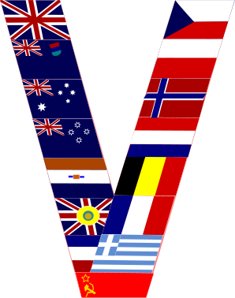
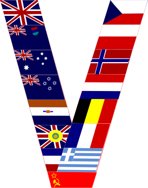

Bitwa pod Warszawą 1944
Znana jako bitwa pancerna na przedpolach Warszawy, bitwa pod Radzyminem lub bitwa pod Wołominem.
bitwa stoczona w czasie II wojny światowej na prawym brzegu Wisły na wschód od Warszawy w dniach 25 lipca – 5 sierpnia 1944
pomiędzy radziecką 2 Armią Pancerną a niemieckimi oddziałami m.in. dywizjami Waffen-SS Wiking i Totenkopf oraz dywizją Hermann Göring.
Owa bitwa była ostatecznym pchnięciem Polaków do Powstanai Warszawskiego.
Przebieg działań bojowych
Pierwsze jednostki zwiadowcze Armii Czerwonej dotarły pod Warszawę pod koniec lipca 1944, a 3 Korpus Pancerny nacierając od strony Mińska Mazowieckiego w kierunku pn.-zach. podszedł na odległość 5 km od mostu na rzece Narew w Zegrzu, z zamiarem uchwycenia przepraw na Bugu i Narwi. Kontratak niemiecki rozpoczął się 30 lipca siłami XXXIX Korpusu Pancernego dowodzonego przez gen. Karla Deckera, w rejonie Radzymina. Już 1 sierpnia niemieckie 19 DPanc. i 5 DPanc. SS po spotkaniu się pod Okuniewem zamknęły pod Wołominem w okrążeniu 3 Korpus Pancerny, który po ciężkich walkach został zmuszony do odwrotu. W dniu 2 sierpnia jednostki radzieckie przeszły do defensywy. 3 Korpus Pancerny został rozbity. Walki trwały do 10 sierpnia. Z powodu ogromnych strat (szczególnie dotkliwych w czołgach), wojska 2 Armii Pancernej już od 6 sierpnia były luzowane przez jednostki z 70 i 47 armii. Ofensywa Armii Czerwonej została powstrzymana, aczkolwiek radzieckie dokumenty wojskowe z tego okresu, które przywołuje w swej pracy Mikołaj Iwanow, nie potwierdzają, iż nastąpiło to bezpośrednio na skutek porażki w bitwie pancernej. Elitarne dywizje niemieckie zatrzymały postępy 1 Frontu Białoruskiego Armii Czerwonej. Istotnym powodem wstrzymania walk było również to, że wskutek szybkiego przesunięcia się linii frontu niebezpiecznie wydłużyły się linie zaopatrzenia, przy czym jednak związane z tym problemy rozwiązano mniej więcej do połowy sierpnia. Zastopowanie ofensywy było korzystne dla Józefa Stalina z powodu wybuchu 1 sierpnia powstania w Warszawie.
Strony konfliktu:
Jednostki Armii Czerwonej biorące udział w bitwie
Niemieckie jednostki biorące udział w bitwie
Bitwa pod Studziankami
W dniach 9–16 sierpnia 1944 roku pod wsią Studzianki (obecnie od 1969 roku Studzianki Pancerne), toczyła się bitwa oddziałów 8 Gwardyjskiej Armii wraz z przydzieloną do niej 1 Brygadą Pancerną im. Bohaterów Westerplatte z elementami dwóch niemieckich dywizji pancernych (1 Dywizja Pancerno-Spadochronowa Hermann Göring i 19 Dywizja Pancerna) i 45 Dywizją Grenadierów. Celem oddziałów radzieckich i polskich była obrona przyczółka warecko–magnuszewskiego przed niemieckimi oddziałami. Bitwa zakończyła się zwycięstwem sił polsko–radzieckich.Przebieg działań bojowych
1 sierpnia wojska 1 Frontu Białoruskiego Armii Czerwonej przeprawiły się przez Wisłę w rejonie Mniszewa i Ryczywołu i opanowały przyczółek warecko–magnuszewski. 3 sierpnia żołnierze z radzieckiego 101 pułku z 35 Gwardyjskiej Dywizji z 4 Gwardyjskiego Korpusu Strzeleckiego zajęli Studzianki i dotarli w rejon Głowaczowa. Spod Wołomina ściągnięto niemiecką Dywizję „Hermann Göring”, której zadaniem było powstrzymanie radzieckiej 8 Gw. Armii kontrnatarciem w kierunku na wsie Chodków i Studzianki. 6 sierpnia rozpoczął się marsz polskich jednostek w kierunku przyczółka tzn. 1 Brygady Pancernej im. Bohaterów Westerplatte, 3 Dywizji Piechoty im. Romualda Traugutta, a następnie 2 Dywizji Piechoty im. Henryka Dąbrowskiego.
Strony konfliktu:
Jednostki Polskie biorące udział w bitwie
Niemieckie jednostki biorące udział w bitwie
Bitwa nad Bzurą
starcie zbrojne, trwające od 9 do 22 września 1939 roku. Największa bitwa kampanii polskiej 1939. Została ona stoczona przez dwie polskie armie „Poznań” (gen. Tadeusz Kutrzeba) i „Pomorze” (gen. Władysław Bortnowski) z niemieckimi 8 Armią (gen. Johannes Blaskowitz) i 10 Armią (gen. Walter von Reichenau) z Grupy Armii Południe „Süd” (gen. Gerd von Rundstedt). Bitwa miała wyjątkowe znaczenie, ponieważ Polacy wykazali inicjatywę i byli stroną atakującą.Przebieg działań bojowych
Rozpoczęcie działań wojennych i ich kierunek nie było zaskoczeniem dla sztabów polskich. Zastosowanie taktyki blitzkriegu znacząco zdezorganizowało polską obronę graniczną i zaplecze taktyczne. Pierwsze dni wojny nie naruszyły znacząco Armii „Poznań”, której miejsce stacjonowania znajdowało się poza głównymi kierunkami ataków. Drugiego września 1939 doszło do wkroczenia wojsk polskich na terytorium III Rzeszy, jednak słuszne spostrzeżenie o braku ataku strony niemieckiej, dało możliwość wsparcia Armii „Łódź”. Zaproponowano Naczelnemu Dowództwu wydania Niemcom zaczepnej bitwy pod Sieradzem. Propozycja została jednak odrzucona, gdyż postępy wojsk niemieckich w głąb kraju zmusiły do wydania rozkazu odwrotu za Wisłę. Bitwa miała trzy główne fazy:
Strony konfliktu:
Jednostki Polskie biorące udział w bitwie
Niemieckie jednostki biorące udział w bitwie
Operacja brzesko-lubelska
Część operacji Bagration, która została wykonana przez Armię Czerwoną w celu zniszczenia wojsk niemieckich w środkowej i wschodniej Polsce. Ofensywa została przeprowadzona przez lewe (południowe) skrzydło 1 Frontu Białoruskiego i miała miejsce w lipcu 1944 r. Naprzeciw niej stały niemieckie Grupa Armii Południowa Ukraina i Grupa Armii Środek.Przebieg działań bojowych
17 lipca 1944 roku zostały zakończone przygotowania do przeprowadzenia operacji. Jeszcze tego samego dnia oddziały wydzielone prawego skrzydła 1 Frontu Białoruskiego ruszyły do natarcia. W dniu następnym, o świcie 18 lipca główne siły Frontu (lewe skrzydło) ruszyło do natarcia. Prawe skrzydło 1 Frontu Białoruskiego atakowało główne zgrupowanie wojsk Wehrmachtu, tocząc bardzo ciężkie walki, w ciągu czterech dni zdołało przesunąć się do przodu zaledwie o 13-60 km. Nieprzyjaciel stawiał zacięty opór, znacznie utrudniając marsz radzieckich dywizji oraz opóźniając realizację założeń taktycznych operacji brzesko-lubelskiej. Znacznie lepiej rozwijała się sytuacja na lewym skrzydle. Jako że stanowiło ono główne siły uderzeniowe Frontu oraz nacierało w pasie, gdzie wojska niemieckie były słabsze, już w pierwszym dniu operacji, tj. 18 lipca 47 i 69 Armia oraz 8 Gwardyjska Armia przełamały główny pas obrony i włamały się w linie niemieckie na szerokość 30 oraz głębokość 15 km. W związku z takim stanem na froncie oraz w celu kontynuacji powodzenia dowództwo 1 Frontu Białoruskiego wprowadziło do działania szybkie grupy operacyjne, czyli 11 Korpus Pancerny i 2 Gwardyjski Korpus Kawalerii. Współdziałały one z już walczącymi oddziałami, a także z 6 Armią Lotniczą.
Strony konfliktu:
Jednostki Rosyjskie i Polskie biorące udział w bitwie
Niemieckie jednostki biorące udział w bitwie
Galeria
 

Quiz
Bibliografia
Bitwa pod Warszawą 1944 - Wikipedia ( https://pl.wikipedia.org/wiki/Bitwa_pod_Warszawą_1944 )Bitwa pod Studziankami - Wikipedia (https://pl.wikipedia.org/wiki/Bitwa_pod_Studziankami)
Bitwa nad Bzurą - Wikipedia (https://pl.wikipedia.org/wiki/Bitwa_nad_Bzurą)
Operacja brzesko-lubelska - Wikipedia (https://pl.wikipedia.org/wiki/Operacja_brzesko-lubelska)
Grafiki na stronie - Wykonane własnoręcznie przy pomocy programów:
(W sposób konwertowania projektu na grafikę wektorową a następne iw programie inkscape na png)